Making Qwen-Image generate in pixel space
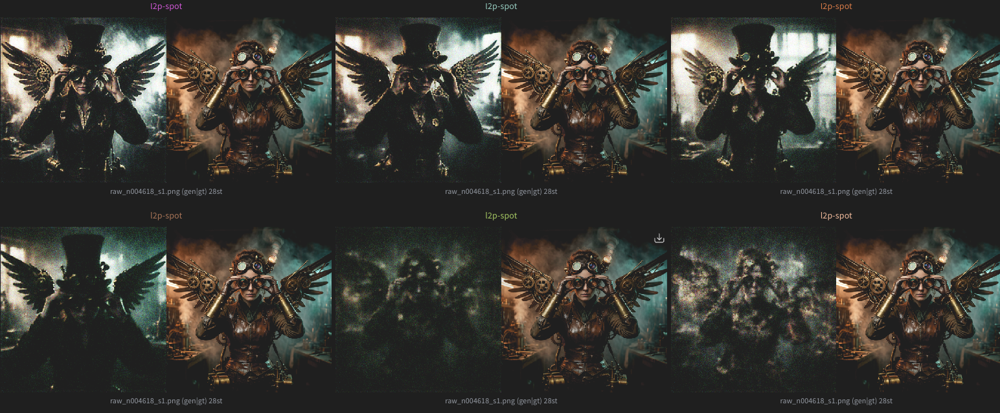
the same prompt and seed across the run, generated directly in pixel space (gen | gt)
The idea comes from the paper L2P: Unlocking Latent Potential for Pixel Generation. Repo with this transferred to QWEN is here. I tried to follow the paper as closely as possible while transferring it to Qwen-Image-2512. A much wider model than Z-Image the paper uses, including the data generation and cleaning pipeline, with bits of the KREA.1 blog mixed into the cleaning and curation. If you just want the gist - it looks good at 26k steps (paper suggests 100k), it plateaued into one specific unresolved artifact, and I ran out of credits before I could pull the last mile.
what L2P actually is, and why you'd want it
Latent diffusion models (Qwen-Image, Flux, Z-Image, all of them) don't generate pixels. They generate in the compressed latent space of a VAE, and then a VAE decoder blows that latent back up into an RGB image. That VAE is why latent diffusion is cheap, you denoise an 8× downsampled tensor instead of a full-res image. But it's also a ceiling. The VAE is lossy, it hallucinates its own texture, and everything the diffusion model learns is expressed through that fixed decoder. You inherit the VAE's failure modes whether you like them or not.
Pixel-space generation skips the VAE and denoises RGB directly. Historically this has been brutally expensive and hard, because pixels have no perceptual compression, the model has to come up with every high-frequency detail itself, and there's no free lunch from a pretrained decoder. That's the whole reason latent diffusion won in the first place.
L2P's insight is that you don't need to train a pixel model from scratch, you can unlock the pixel-generation ability inside an already trained latent DiT. The pretrained transformer already contains an enormous amount of visual prior, L2P keeps that frozen and only learns the thin machinery needed to read pixels in and write pixels out. Concretely:
- Freeze the entire DiT backbone. All the expensive pretrained knowledge stays exactly where it is.
- Train only three things: the input projection (so the model can ingest raw pixels), the first and last n transformer blocks (to adapt the entry/exit representations), and a newly added Detailer Head, a small U-Net that consumes the DiT's feature map and emits the final high-frequency pixel prediction.
- Keep the source model's exact training objective. For a rectified-flow / flow-matching model, that means predicting the velocity \(v = \epsilon - x_0\) under the same noise schedule the base model was trained with. You are staying inside the source model's optimization manifold, that's the entire trick.
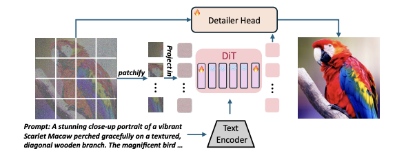
Overview of the L2P framework
One subtlety that matters enormously later: the Detailer Head does not output an image. It outputs velocity (\(\epsilon - x_0\)), same as the backbone. There is no encode then decode an image path in this design. I'll come back to why that quietly wrecked one of my debugging assumptions.
the overfit run
Before spending real money I did what everyone should do, a tiny overfit run to confirm the plumbing and the hyperparameters. The paper is vague on exact hyperparams outside the ablation tables, so I needed to confirm for myself.
A few choices here that diverge from the paper:
- 6+6 blocks instead of 3+3. The paper uses ~3 blocks each side on Z-Image. Qwen-Image is a wider and deeper model, so I scaled the trainable band proportionally: first 6 + last 6, leaving the deep middle frozen. My reasoning being proportionally this is roughly the same fraction of the network the paper touches, and 12 trainable of ~60 layers still leaves the priors intact. This actually performed better on my overfit runs.
- Optimizer. I tried Muon on the 2D attn/MLP weights with AdamW for embeddings, norm, and the decoder. It did not beat plain AdamW in my tests, probably because most of the work is being done by the Detailer Head, and Muon just doesn't finetune an Adam-pretrained model well.
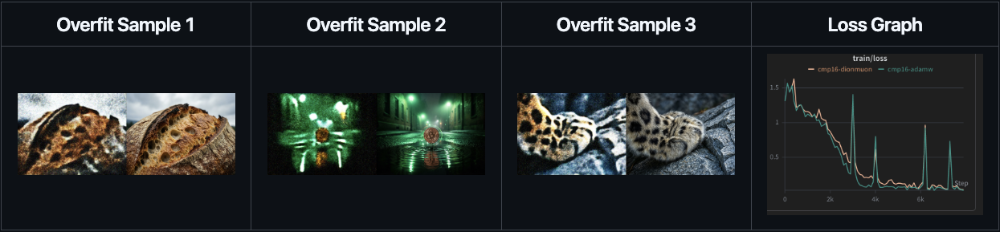
overfit samples grid (gen | gt)
This was enough to verify good hyperparams. Then the long, boring, actually-important part started: data.
data Collection
L2P's fast convergence depends on the training images being generated by the same source model you're transferring. The paper's ablation is unambiguous: source-model-generated data converges fastest and cleanest, cross-model data (images from a different generator) converges slower and to a worse ceiling, real/scraped data is worst of all, because the pixel model is being asked to fit a manifold that isn't its own prior's. This is the single highest leverage decision in the whole project and it's easy to get subtly wrong.
So all my training images are Qwen-Image generations, the model is learning to paint its own manifold in pixels, not somebody else's. Roughly 18k cleaned samples, mostly 1328×1328 area, resized to 1024 for this stage. The plan was always: get 1024 working, then finetune on full-res, then a 4K dataset for aesthetics.
The pipeline borrowed from the KREA.1 blog for cleaning and curating: dedup, quality filtering, aesthetic thresholds. I also kept 2–3 seeds of the same prompt for some samples to preserve a bit of diversity. Since I'm not touching the mid layers, prompt-level near-duplicates shouldn't collapse anything.
The raw and cleaned datasets are on HuggingFace:
- shauray/l2p-dataset
- shauray/l2p-part0
- shauray/l2p-raw
- cleaned ~18k: shauray/l2p-clean
the transfer run
Training on spot instances, which meant compute came in fits and starts, finding H200s in the region I wanted, and finding spot there, was genuinely the hardest logistical part. I ran on Verda. The schedule ended up being a batch-size ramp as I got more GPUs: from 16 global to 32 to 64 (4×H200, BS 16 each), with LR 5e-5 on a cosine schedule.
The early curve looked healthy, loss dropped fast and flattened around ~0.85 by ~1.5–2k steps. And then, the samples looked structurally correct but drowned in high-frequency chroma grain. The composition was right, the subject was right, but the whole frame carried an RGB speckle that just would not go away, seemingly for thousands of steps.
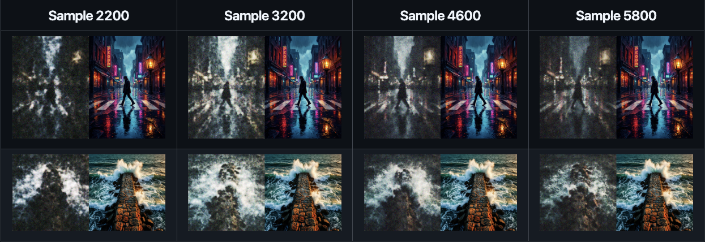
early transfer samples (gen | gt)
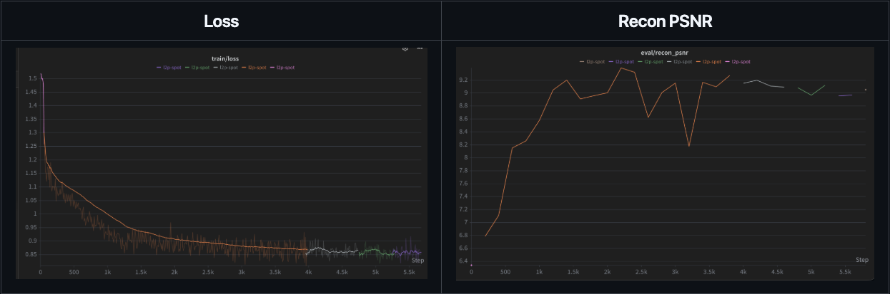
loss curve (stitched across spot restarts)
In flow-matching training the loss is an average over all noise levels and it saturates almost immediately. Most of the mass is at easy noise levels. Sample quality keeps climbing for a long time after the loss goes flat. The loss curve literally cannot tell you whether you're still improving in finetuning scenarios.
My recon_psnr was reading 7–9 dB and I assumed the model was broken. But 7–9 dB contradicting a visibly-correct structure is a metric bug, not a model bug, so never trust an LLM when it comes to writing evals and calculating these metrics. That pattern is the classic signature of a value-range mismatch (\([-1,1]\) vs \([0,1]\)) or scoring the noised generation against gt. When PSNR and your eyes disagree by that much, trust your eyes and audit the metric.
Also worth noting against the panic: the paper's own budget is 100k steps. At 7k I was at 7% of the reference run.
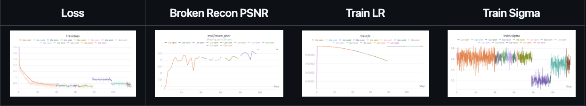
loss, the broken recon PSNR, LR and the sigma distribution mid-run
the debugging arc
Once I stopped eyeballing and started forming falsifiable hypotheses, the project turned into a proper bisection of the pipeline. Here's the sequence, including the dead ends, because the dead ends were most of the work.
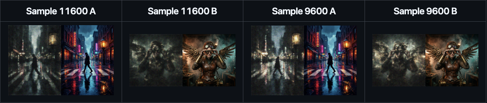
samples around 9.6k–11.6k, structure is right, the speckle is not going anywhere (gen | gt)
Is it the sampler, or the model?
The residual grain had two possible sources: either the trajectory wasn't fully denoising (a sampling/schedule problem), or the Detailer Head genuinely couldn't produce clean high-frequency pixels (a capacity problem). To split them I ran a decoder recon test: feed clean gt through the head at low noise, no diffusion rollout, and measure how well it reconstructs.
Result: ~32 dB PSNR, LPIPS ~0.18, 1:1 copies of gt. The head is not the bottleneck, hand it good features and it reconstructs pixels perfectly. That killed the "widen the decoder" branch entirely.
But this test has a blind spot I didn't appreciate at the time: it's a single clean forward pass. It never runs the forward noising, never runs the multi-step sigma schedule, never round-trips the full trajectory. Anything that lives in those paths is invisible to it.
The sigma-truncation dead end
I tried "bias training toward low sigma" to attack the residual noise, but implemented it as a hard truncation to \(\sigma \in [0, 0.4]\). This made things worse: structure got mushier, because the input projection and first/last blocks stopped getting gradient on the high-noise regime that generation starts from. Bias the timestep distribution with a soft reweight, never a hard cut, you still need the whole range.
Instrumenting properly
At this point I finally built the thing I should have built at step 0 and not rely on an LLM to do that: a diagnostic pass logging per-channel grain statistics, normalization symmetry, noise unit-variance, sigma-distribution vs the target, and rollout LPIPS on a fixed prompt/seed set every N steps. If you take one thing from this post: build the honest eval harness before you start, not 15k steps in. The naked eye cannot resolve a 2k-step delta on an 800px thumbnail, and downscaling hides the exact grain you're trying to judge.
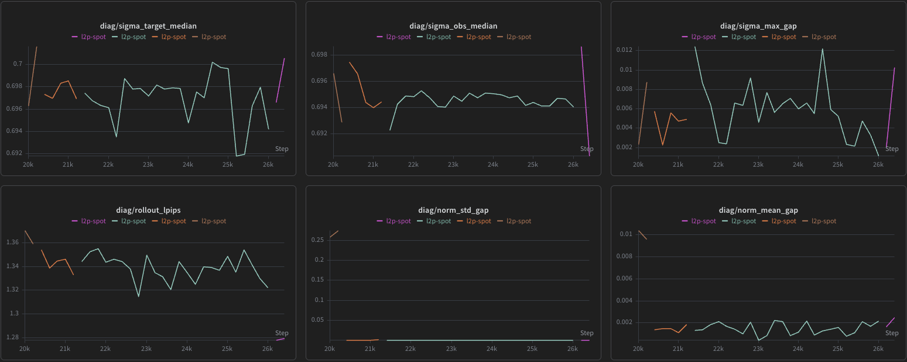
diagnostic panel
Here's a substantive one. My timestep distribution was sitting mostly in 0.3–0.7, centered ~0.5. That is, to three decimals, an un-shifted logit-normal(0,1). But Qwen-Image doesn't train like that.
Qwen-Image uses logit-normal timestep sampling plus a resolution-dependent exponential shift that biases sampling toward the noisier end, at native resolution it's equivalent to a linear shift of ~2.205, and the FlowMatchEulerDiscreteScheduler shift people run for Qwen at 1024 is ~3.16. The correct distribution for my setup should sit much higher, median ~0.75, fat tail toward 1, and on top of that, L2P itself wants a high noise bias for large patch pixel inputs (to stop the model cheating with trivial local reconstruction).
So I was training a flatter, more central noise distribution than the model I'm inheriting from was ever trained on, a direct violation of the "stay inside the source manifold" rule. Read the shift straight off the Qwen checkpoint's scheduler config and match it. Do not hardcode a number from a paper or a blog, read the ground truth from use_dynamic_shifting.
The one that actually fixed the visuals
Every "residual grain" sample up to this point was generated at the wrong guidance scale, effectively no CFG. A flow model sampled without its intended guidance produces exactly that washed-out, under-resolved, noisy look, and sharpens dramatically the moment you apply proper CFG.
Even better than bolting CFG onto inference: I added CFG dropout during training (randomly dropping the conditioning so the model actually learns an unconditional branch and responds to guidance properly). This was the single biggest visual jump in the entire project. Faces resolved, neon cleaned up, reflections sharpened. Below are sampled from the same step, same seed, just CFG ramped up to 4 rather than 0.
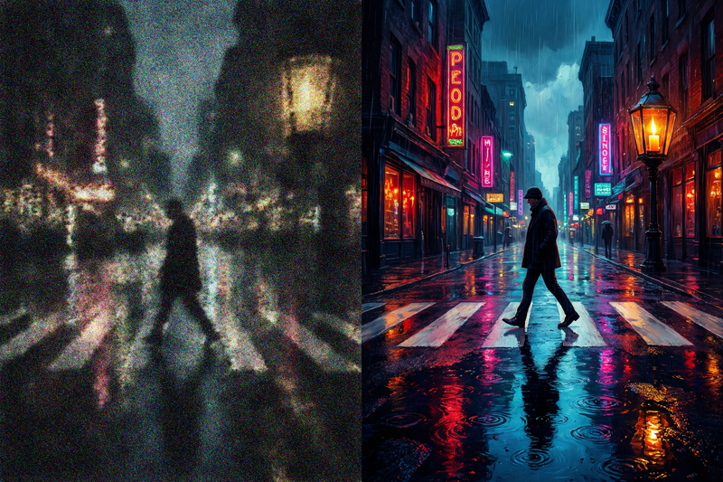
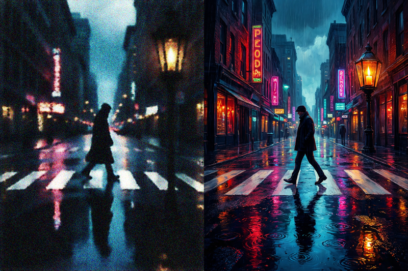
[cfg=0 | cfg=4], each pair is (gen | gt)
Honestly, "what CFG are you sampling at?" should have been the first question anyone asked, including me. Many turns of treating an inference setting as a training defect.
Killing the terminal-SNR hypothesis
The last plausible "cheap fix" was terminal SNR, maybe the final sampling steps just weren't driving sigma close enough to zero, leaving residual noise in the bright regions. Just to rule things out I resampled a fixed seed pushing terminal sigma to 0.002 with extra tail steps.
Result: PSNR from 11.76 to 11.78, LPIPS 1.4025 to 1.4007. Nothing. Third-decimal noise. If the grain were leftover terminal noise, this would have visibly cleaned it. It didn't. So the residual is not the sampler stopping short.
[base | tail | gt]
where it stands at 26k
After the sigma-shift fix and the CFG/CFG-dropout change, the model is genuinely good. Composition, color, structure, mid-tones and shadows are close to the Qwen targets. The street scene, the steampunk portrait, the breakwater stonework, all there.
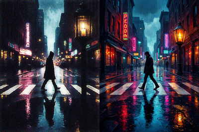
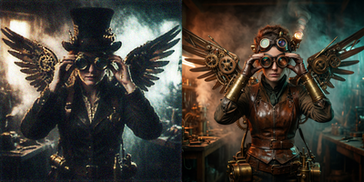
samples at 26k (gen | gt)
What's left is one specific, honest defect: a uniform high-frequency speckle sitting on top of an otherwise correct image, worst in bright flat regions (foam, fog, sky) but present everywhere including the shadows. And the metrics have gone flat across ~5k steps at a correct schedule and correct guidance.
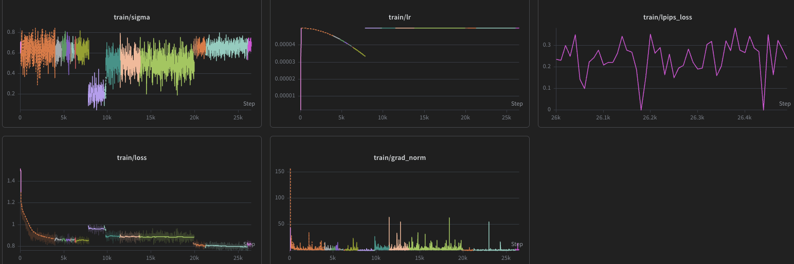
the full 26k-step run, stitched across spot restarts
Here's my read on what that plateau is, having eliminated everything else:
- It's not the sampler
- It's not the channels or normalization
- It's not the schedule
- It's not guidance
- It's not the Detailer Head's capacity
- It's not data quantity or provenance
That is the clean next move. It's paper-endorsed, it's specifically indicated by every other branch being eliminated, and it's the one lever I haven't pulled.
the honest ending, and an ask
I had to stop the run at 26k steps because I ran out of compute credits. Not because it failed, the opposite. It's a genuinely-good 1024 pixel-space Qwen model sitting one well-identified lever away from resolving its last artifact, at ~26% of the paper's reference 100k budget. The finetune runs I always planned, full-res, then a 4K aesthetic pass, never got to start.
So, plainly: if you have compute credits to spare and you'd like to see this finished, I'd be very grateful. The immediate roadmap is concrete and cheap to verify: fix the LPIPS instrument, add the perceptual loss term, push toward the 100k budget, then the full-res and 4K finetunes. Everything is public, the code, the datasets, and this writeup. If you want to help with GPU time or credits, reach out please :)
I'll keep the repo and this post updated as (if) the run continues. Thanks for reading, and if you take one thing from a few weeks of my mistakes: build the honest eval harness first, and never trust a metric that disagrees with your own eyes.
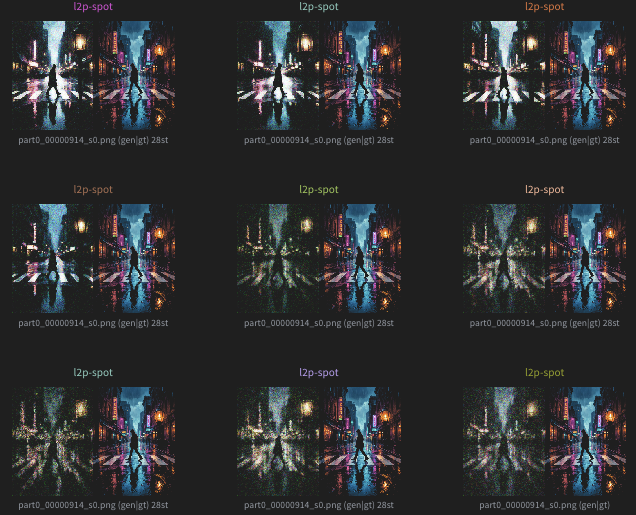
samples across a couple thousand steps
Appendix / reproducibility notes
- Source model: Qwen-Image-2512. Method: L2P (frozen DiT + input-proj + first/last-6 blocks + Detailer Head). Objective: flow-matching velocity \(\epsilon - x_0\), Qwen-native shifted logit-normal schedule.
- Data: ~18k Qwen-generated images, ~1328² area, trained at 1024. shauray/l2p-clean.
- Optim: AdamW, LR 5e-5. Batch ramp 16→32→64 global on 4×H200 (spot, Verda). CFG 4 at inference + CFG dropout in training.
- Open problem at 26k: uniform high-frequency residual; indicated fix = LPIPS term on predicted \(x_0\) (blocked on fixing the LPIPS eval range first).